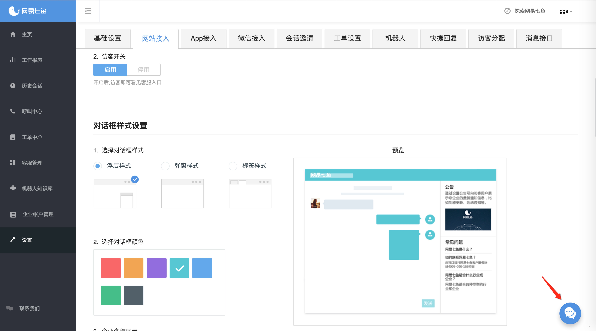
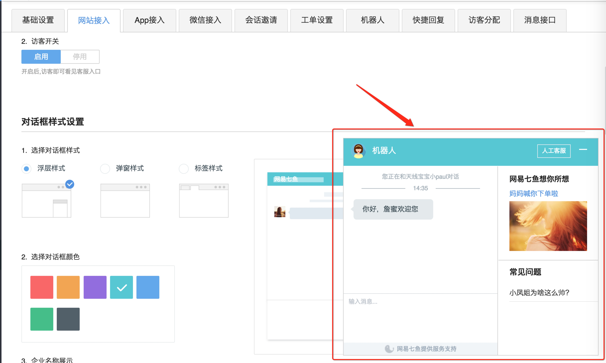

以管理员身份进入管理后台, 在设置下的 网站接入 设置页面进行设置( 管理系统-> 设置-> 网站接入设置 )。 现阶段七鱼提供了3种接入方式。

<script src="https://qiyukf.com/script/[APPKEY].js" charset="UTF-8"></script>
浮层入口  浮层展示 
为保证接入按钮的定制化需求，自定义入口图标，需要以下接入方式：
<a href="#" id="online-service">在线客服</a>
<!-- hidden设置成 0 或者 1 -->
<script src="https://qiyukf.com/script/044865c94981c048609d5c94c1ae9c6d.js&hidden=1" charset="UTF-8"></script>
<!-- hidden-->
<script src="https://qiyukf.com/script/044865c94981c048609d5c94c1ae9c6d.js&hidden" charset="UTF-8"></script>
<script>
document.getElementById('online-service').onclick = function(){
ysf.open();
};
</script>

如果想开启浮层模式，且需要制定具体用户，则请检查之前的接入代码是否正确
注： 在上种情况下， 制定具体用户（ysf.config({uid:'用户名'})）的代码必须写在接入代码之后， 如下所示：
<a href="#" id="online-service">在线客服</a>
<script src="https://qiyukf.com/script/044865c94981c048609d5c94c1ae9c6d.js" charset="UTF-8"></script>
<script>
ysf.config({
uid : '用户名'
});
</script>
<script>
document.getElementById('online-service').onclick = function(){
ysf.open();
};
</script>
为了满足不同平台的需要，七鱼客服接入方式可以自动区别不同平台的接入方式，如果在管理系统开启了浮层模式
浮层模式下自定义窗口，不会出现消息提醒和消息数, 因此七鱼暴露unread事件读取未读消息数和消息的事件和接口,具体使用如下:
/**
* 返回消息对象
* @param {String | Object} msg - type为image|audio, 则message为对象
* @param {Number} total - 消息数
* @param {String} type - 消息类型, 如 text, audio, image
*/
// 事件监听方式
ysf.on({
unread : function(msg){
if(msg.total){
// 处理逻辑
}
}
});
// 接口方式
ysf.unread();
在浮层模式下，如果发现用户名没有接入成功，可以如下调整进行设置：
<!-- 必须在接入脚本代码之前 -->
<script>
window.YSFUID = '制定用户名';
</script>
<script src="https://qiyukf.com/script/044865c94981c048609d5c94c1ae9c6d.js" charset="UTF-8"></script>